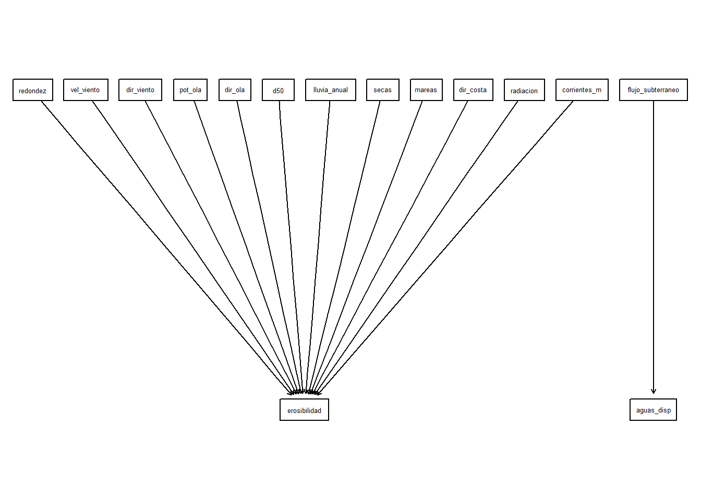

2 Datos

Characterization of Surface Evidence of Groundwater Flow Systems
3 Miro
3.1 Construcción colaborativa de Redes Bayesianas
La propuesta que hacemos es usar Miro como plataforma de debate y construcción de concenso. Buscamos así aproximarnos a la estructura causal que vincula las variables que determinan el rendimiento y la sustentabilidad (social, económica y ambiental). Una vez resuelta esta etapa, es necesario transferir lo acordado en Miro a plataformas de análisis estadístico. Aquí, nos propusimos trasladar los resultados de Miro a R. Al hacer esto las posibilidades analíticas se potencian muy ampliamente. Como veremos, podemos recurrir a dagitty o incluso utilizar Python y Netica. Para hacer esto optamos por la ruta de acceso commputacional a través de la interfase “REST”. Esto implica usar la biblioteca httr en R.

Hemos preparado una biblioteca con las rutinas que se describen aquí, para que las puedan usar según se requiera. Para descargarlas usa el botón que sigue.
3.2 Acceder a Miro
En preparación para usar REST se requiere tener permisos de acceso de acuerdo con las especificaciones que se dan aquí. Estas credenciales hay que evitar distribuirlas, así que en este ejercicio utilizo la biblioteca keyring para mantenerlas confidenciales. Esta biblioteca permite utilizar el sistema de seguridad del equipo para la gestión de las claves. Para dar de alta una llave utilicé en este caso la instrucción siguiente:
key_set(service = "miro", username = "miguel-token")
Una vez registrada en el equipo la llave, queda lista para su uso en cualquier momento con la función key_get.
Hay Explicaciones y ayuda para producir el código. Se encuentran aquí. Es muy amigable pues produce ejemplos concretos con los atributos particulares de interés del usuario.
Por ejemplo, veamos como recuperar los datos de acceso a un tablero particular simplemente verificando las credenciales que reconoce Miro al consultarle.
El resultado que regresa Miro es un json así que utilizaré la biblioteca jsonlitepara convertirlo a un dataframe.
library(devtools)
install_github("equihuam/miro2bayesNet", force = TRUE)
── R CMD build ─────────────────────────────────────────────────────────────────
* checking for file 'C:\Users\equih\AppData\Local\Temp\RtmpQlMKQp\remotes2dccebb7c1d\equihuam-miro2bayesNet-3ed9e96/DESCRIPTION' ... OK
* preparing 'miro2bayes':
* checking DESCRIPTION meta-information ... OK
* checking for LF line-endings in source and make files and shell scripts
* checking for empty or unneeded directories
* building 'miro2bayes_2.50.15.tar.gz'
library(miro2bayes)
library(bnlearn)
library(bnviewer)
library(tidyverse)
tableros <- miroBoards(servMiro = "miro", user = "miguel-edu-token")
tableros[, c("name", "id")] name id
1 Costa arenosa uXjVKB6PRSY=
2 Education Plan Basics uXjVPZCsPDE=
3 Education Plan Apps & Integrations uXjVPZCsPUo=
4 Education Plan Administration uXjVPZCsPVc=
5 Education Plan Useful Resources uXjVPZCsPVQ=tablero_tr <- tableros %>%
filter(str_detect(name, "Costa")) %>%
select(id, name)
datos_miro <- getMiro(servMiro = "miro", user = "miguel-edu-token",
board = tablero_tr)
miroValidation(datos_miro)Miro board origin: Costa arenosa
Is it a TRUE DAG?: Graph is acyclic
Number of sticky notes: 3
Nodes without var: 1
Number of linked nodes: 2
Duplicated nodes: 0
Number of arcs: 1
Well connected arcs: 1
Numb. Loose arcs: 0
Duplicated arcs: 0neticaMiro <- miro2DNE(datos_miro)
write(neticaMiro, "costa-arenosa.dne")
netMiro_bn <- miro2bnlearn(datos_miro)
netMiro_bn
Random/Generated Bayesian network
model:
[eti1][eti2|eti1]
nodes: 2
arcs: 1
undirected arcs: 0
directed arcs: 1
average markov blanket size: 1.00
average neighbourhood size: 1.00
average branching factor: 0.50
generation algorithm: Empty variables <- tibble(var = datos_miro$nodes$var)
graphviz.plot(netMiro_bn, layout = "dot")
3.3 Resumen
3.3.1 Conceptos y recomendaciones
Se demuestra la interacción con un Tablero Miro desde R para generar una red bayesiana en forma colaborativa. Para facilitar el procedimiento se convino usar la siguiente rutina de integración del tablero:
- Una Red Bayesiana siempre es un DAG (grafo acíclico dirigido), consta de nodos (las notas adhesivas) y arcos los conectores que indican la existencia (a veces sólo la sospecha) de interacción causal entre variables. Estos arcos tienen una orientación, de ahí que los representemos por flechas con la causa en la cola y en el efecto en la punta (normalmente el resultado esperado, la casa antecede al efecto). Hay que asegurar en Miro que el contacto de cada conector con los dos nodos que vincula quede establecida. Miro sugiere contacto válido destacando en gris el nodo que toca la flecha. Una vez hecho el contacto, la flecha puede ubicarse en cualquier posición sobre el borde gris que aparece en torno al papelito. Puede ser que haya arcos que no quedaron adecuadamente ligados a sus papelitos de inicio o final. Esto es una inconsistencia técnica para los fine de extracción de datos.
- Cada Nodo deberá ser representado por una sola Nota adhesiva (“sticky note”). En este papelito se puede acomodar el texto descriptivo que se desee, pero conviene definir operacionalmente la variable y especificar la escala de medición y posible patrón de discretización o conjunto de niveles que puede tomar.

- Cada nodo deberá tener una etiqueta vinculada, que especifique el nombre de la variable que lo representará en forma única. Deberá coincidir con la forma como se etiquetan los datos respectivos en la base de datos de que se disponga para el análisis. Se recomienda usar nombres cortos, alrededor de 10 caracteres alfanuméricos (ASCII para Netica), sin marcas diacríticas o símbolos, ni espacios. Como separador usar guión bajo.

En el enfoque causal que estamos proponiendo, las propiedades del DAG son importantes. El modelo bayesiano representa una propuesta del proceso generador de la distribución de probabilidades conjunta del sistema. Esto es importante, no sólo como una propiedad matemática del modelo, sino porque el DAG describe patrones específicos de correlación e independencia condicional que deben existir entre todos los factores involucrados, asumiendo que es válido el DAG propuesto. Además, en el diseño de políticas públicas interesa influir sobre el comportamiento del sistema. En todos los casos esto permite considerar los patrones específicos de independencia condicional que emergen, por implicación, de la estructura causal del sistema y que determinarán las consecuencias esperadas de las intervenciones planeadas.
Con toda la información reunida en Miro es posible transferir la estructura de la red a Netica. No será una red completamente funcional, sólo incluirá los nodos con los nombres y vínculos acordados y registrados en Miro. Con base en esta información se tiene lo necesario para construir la red en la forma que convenga a varias plataformas de análisis: bnlearn en R o causalnex, pomegranate, pgmpy en Python.